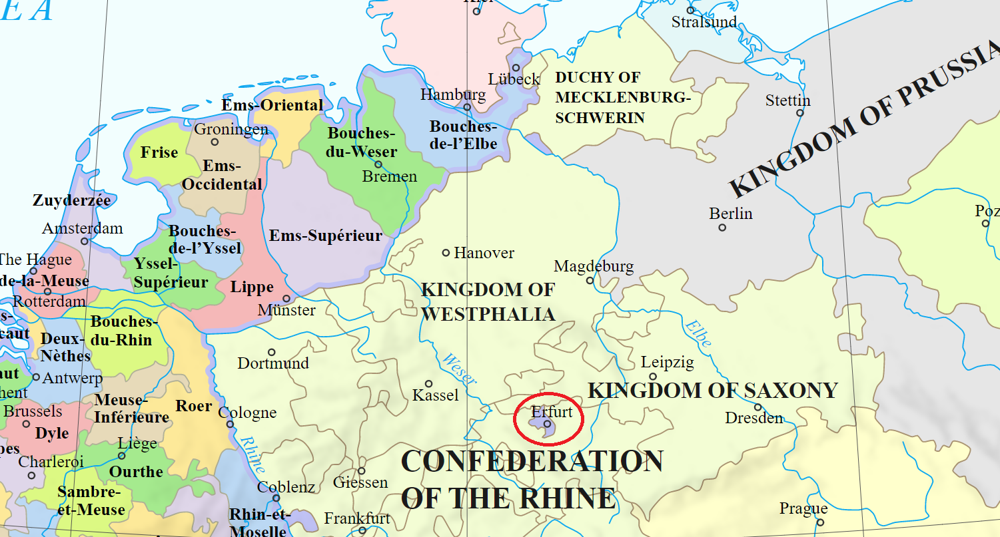
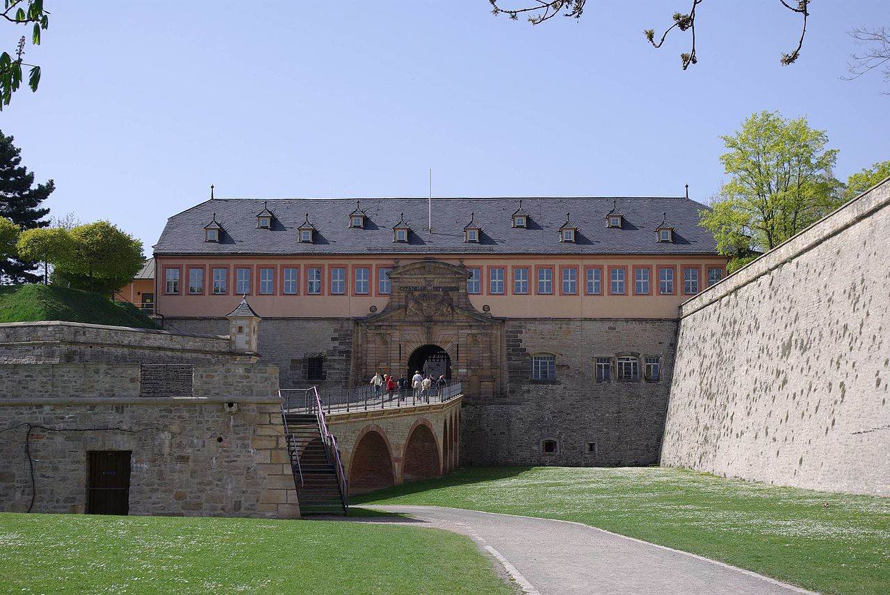
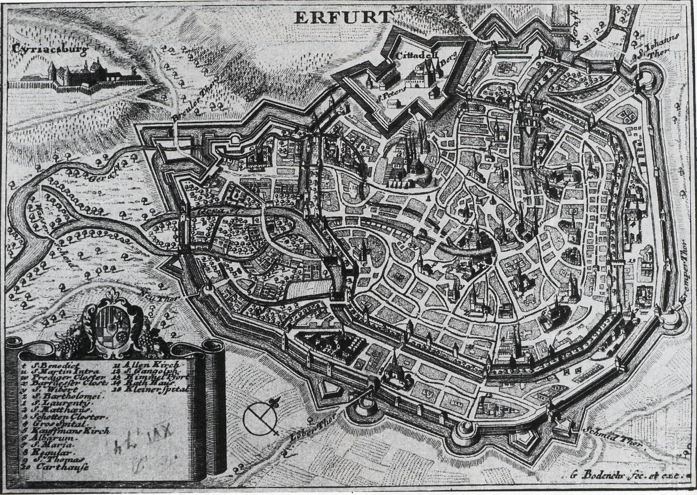
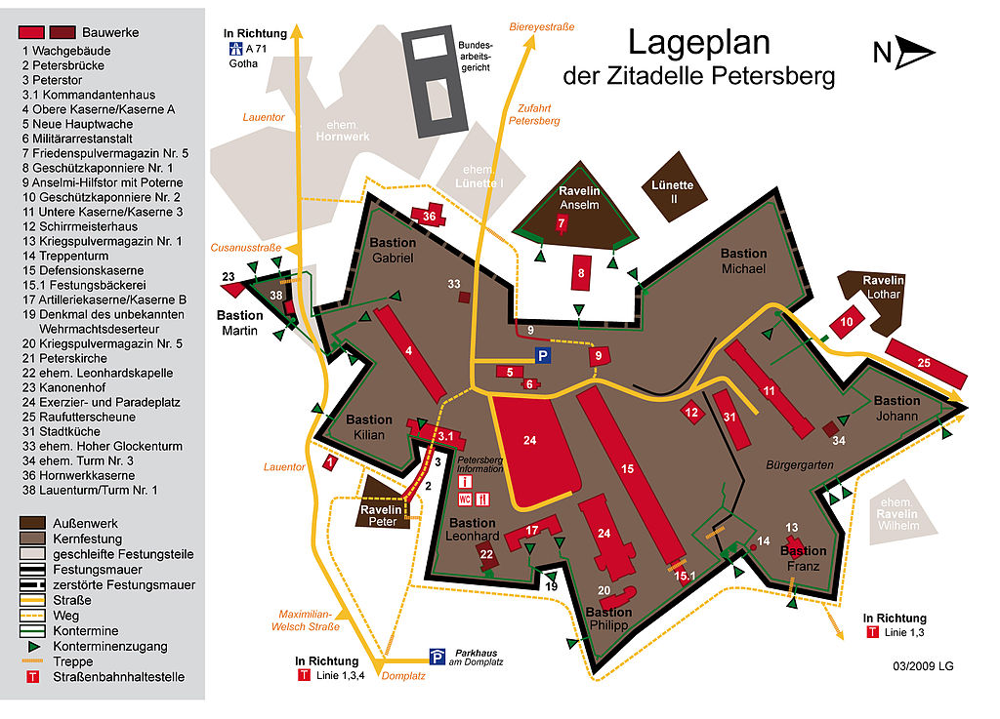

스페인 모델의 실패 - 냉정한 작센 사람들
게시: 2022-06-27T06:30:17+09:00
3월 30일, 드레스덴의 강북 신도시 노이슈타트(Neustadt)에 들어온 블뤼허는 브레슬라우 사령부에 있던 하르덴베르크에게 편지를 보냈습니다. 이 편지에서 블뤼허는 노이슈타트와 드레스덴 구도심지 알트슈타트(Altstadt)를 연결하는 아우구스투스 다리의 폭파에 대해 언급하며 이로 인해 작센인들의 반(反)프랑스 감정이 악화되었다고 썼습니다. 실제로 드레스덴에 입성한 프로이센군은 드레스덴 시민들로부터 열광적인 환영을 받았고, 나폴레옹으로 대표되는 새로운 체제를 지지했던 사람들도 그냥 불만 가득한 침묵을 지켰을 뿐 말썽을 일으키지는 않았습니다. 그리고 프로이센군도 엄정한 군기를 준수하여, 드레스덴은 물론 모든 작센 주민들에 대해 우호적인 태도를 유지했습니다. 그러나 드레스덴에 입성한 이후 블뤼허가 자신의 부인 및 하르덴베르크에게 쓴 편지에는 꽤 실망스러운 이야기가 씌여 있습니다. 이에 따르면 작센인들은 괴팍한 블뤼허조차 살짝 감동할 정도로 프로이센군과 자신을 환영했으나, 딱 거기까지였습니다. 작센인들의 환영을 보고 러시아-프로이센 연합군은 병력과 군수품을 충원하는데 문제가 없을 것으로 생각했으나, 그건 착각이었습니다. 그렇게 자신들을 웃는 얼굴로 환영하던 드레스덴 저명 인사들에게 물질적 지원을 요청하자 그들의 표정은 돌처럼 차갑게 돌변했습니다. 작센인들이 좋아하건 싫어하건 블뤼허는 징발령을 발표하고 드레스덴에서 군복을 위한 직물과 군화를 위한 가죽, 그리고 언제나 부족하기 마련인 식량 등을 압수하기 시작했습니다. 물론 약탈이 아니라 합법적 징발이므로 가져가는 물건에 대해 향후 보상을 약속하는 영수증을 써주긴 했지요. 그러나 정말 보상이 이루어질지, 이루어진다고 해도 언제 얼마나 이루어질지 아무도 모르는 그런 영수증을 가치있는 유가증권으로 생각하는 사람은 아무도 없었습니다. 이러면서 작센인들의 감정은 또 급격히 나빠지기 시작했습니다. 결국 물건을 가져가는 주체가 나폴레옹에서 블뤼허로 바뀌었을 뿐, 외국군은 모두 약탈꾼에 불과하다는 인식이 들 수 밖에 없었으니까요. 나폴레옹의 신체제를 분쇄하기 위한 구체제 연합군의 브레인 역할을 하던 샤른호스트는 어떻게 보면 오히려 나폴레옹의 참모로 있는 편이 더 어울리겠다 싶을 정도로 신체제적인 사고 방식을 가지고 있었는데, 그런 샤른호스트는 블뤼허가 대규모 징발을 시행했다는 보고를 받고는 그나이제나우에게 편지를 써서 그에 대한 유감을 표시했습니다. 샤른호스트는 작전상 필요에 의해 어쩔 수 없는 경우엔 징발을 해야 하지만, 아직 작전 초기라서 아직 군복과 군화 상태가 양호할 텐데 벌써 군복을 징발할 필요가 정말 있었느냐는 입장이었습니다. 그는 프로이센군이 작센 국민에 대해 우호적인 태도로 관용을 베풀어야 하는데, 오히려 프랑스군 병참장교처럼 행동했다고 아쉬워했습니다. 실무적으로는, 그는 이제 따뜻해지기 시작하는 봄에, 보온이 아니라 겉모습과 그에 따른 사기 진작을 위한 군복류의 징발은 극도로 억제되어야 하며, 다만 군화류는 군대의 기동성과 직결되므로 필요한 대로 징발해야 하지만 그것도 최대한 우호적인 태도로 진행할 것을 권고했습니다. 특히 그는 연합군이 작센에서 어떻게 행동하는지가 곧 전체 독일에 연합군이 어떤 모습으로 받아들여질 것인지를 결정하므로 매우 중요하다고 당부했습니다.

(당시 병사들이 신던 군화는 좌우 구분이 없었고 군화끈 구멍에도 쇠로 테를 두르지 않아 군화끈과 군화 가죽 자체가 쉽게 손상되었습니다. 실은 군화 자체가 별로 튼튼하지 못해서, 원정 작전에서는 그 수명은 불과 2~3달을 넘지 못했습니다. 크기도 대(270) 중(230) 소 (200) 딱 3가지였다고 합니다.) 샤른호스트는 뒷전에 앉아서 이렇게 맞는 말만 늘어놓으면서 입만 터는 평론가는 아니었습니다. 그는 기존처럼 현장 지휘관들이 제멋대로 징발권을 수행하게 내버려 두었다가는 독일 민족의 봉기라는 대의를 망쳐놓을 거라는 것을 깨달았습니다. 또한 3월 하순에 러시아군과 프로이센군 사이에 벌어졌던, 사실상 징발물자 분쟁인 코트부스 영토 분쟁 같은 일이 재발되는 것도 막아야 했습니다. 결국 그런 문제점들에 대한 샤른호스트의 대응은 4월 6일 쿠투조프의 "독일 점령지 관할 중앙 병참부" 설립 발표로 구체화되었습니다. 이 병참부에서는 어느 지역을 연합군 어느 부대가 점령하고 징발을 수행할 지를 조율하게 되어 있었는데, 그 책임자로는 이미 오래 전에 러시아로 망명했던 프로이센의 전임 총리 슈타인을 임명했습니다. 아무래도 모양새가 러시아인보다는 프로이센인, 그것도 민간인 관료가 더 적절했던 것입니다. 슈타인은 1807년 틸지트 조약 이후 프로이센의 개혁을 이끌던 능력있는 고위 관료였으니 연합군 전체에서 그보다 더 적임자는 없었을 것입니다. 그러나 4월 9일, 중앙 병참부가 위치한 드레스덴에 도착한 슈타인도 당장 물질적 손해를 보아야 했던 작센인들의 차가운 분노를 달랠 방법은 없었습니다. 작센 청년들이 자발적이든 강제로든 프로이센군의 대열에 참여하는 일은 상상도 할 수 없는 분위기였습니다. 실은 작센에서는 물론이고 프로이센에서조차도 프랑스의 압제를 타도하기 위한 독일 민족의 자발적 봉기는 사실상 일어나지 않았습니다. 프로이센 개혁파들이 꿈꾸던 모델은 스페인 민중이 보여준 반나폴레옹 봉기였지만, 결국 독일은 스페인이 아니었습니다. 스페인과 독일의 차이점은 분명했습니다. 스페인은 어느 정도 산업화가 진행되던 독일과 달리 시민계급의 발달이 더뎠고, 대신 19세기에도 이단심문이 진행되던 나라답게 광신적 수준으로 종교적 믿음과 (비록 프랑스 출신 왕가였지만) 부르봉 왕가에 대한 충성심이 강했습니다. 덕분에 물질적 손해 감수는 물론이고 수많은 민간인들이 자발적으로 게릴라 활동을 벌이며 반프랑스 대열에 목숨을 바쳐가며 싸웠습니다. 하지만 작센은 물론 프로이센조차도 그런 물질적 손해에 민감했고, 시민들이 자발적으로 목숨을 바쳐 호헨촐레른 가문을 위해 싸우는 일은 일어나지 않았습니다. 스페인 모델은 독일에서 실패한 것이 분명했습니다. 결국 샤른호스트의 1차적 목표, 즉 가급적 많은 전쟁 물자와 인력을 확보하기 위해 병력을 양분하여 베를린과 드레스덴을 점령한다는 목표는 달성했지만, 그 실속은 크지 않았다고 할 수 있습니다. 그러나 샤른호스트의 작전 계획의 최대 장점은 유연성에 있었습니다. 애초에 그런 목표를 정했던 것도 나폴레옹이 어떻게 나올지 알 수 없으니 일단 그렇게 자원과 유리한 입지 확보를 우선시한 뒤, 나폴레옹의 움직임이 파악되면 그에 따라 유연하게 대응하려고 했던 것입니다. 그리고 1차 목표를 달성하면서 관측해보니, 나폴레옹은 의외로 오데르 강은 물론이고 깔끔하게 엘베 강 너머까지 많은 지역을 비워주고 철수하는 모습을 보여주었습니다.

(종교 개혁을 이끈 마틴 루터가 젊은 시절을 보냈던 에르푸르트는 오랜 기간 독립을 누리던 자유도시였다가 마인츠 선제후의 지배하에 들어가는 등 많은 굴곡을 겪은 도시로서, 튀링겐(Thüringen) 지역의 주도입니다. 제2차 대불동맹전쟁의 결과 프랑스는 라인 강 좌안 지역을 모두 점령하게 되었는데, 중립을 지킨 프로이센에 대한 보상으로 1802년 나폴레옹이 프로이센에게 에르푸르트를 떼어준 바 있었습니다. 그러나 몇 년 안된 1806년 프랑스는 프로이센을 그야말로 박살을 내었고, 나폴레옹은 에르푸르트와 그 일대를 프랑스 직할령으로 만들었습니다. 이는 에르푸르트가 프랑스 본토와 연결되지 않은 외지였음에도 워낙 지정학적으로 요지였던데다 특히 그 내성인 페터스베르크 요새(Zitadelle Petersberg)가 매우 튼튼했기 때문에 군사적 가치가 매우 높았기 때문이었습니다.)

(에르푸르트의 내성인 페터스베르크 요새입니다. 이 성은 1664년 에르푸르트가 독립을 잃고 마인츠 선제후의 영토로 편입된 바로 다음해부터 시작하여 61년 동안이나 지어졌습니다. 내성답게 에르푸르트 시내의 페터스베르크(페터의 산이라는 뜻) 언덕에 지어졌는데, 이 요새의 목적은 에르푸르트 시민들이 마인츠 선제후의 지배에 저항하지 못하도록 제압하는 것이었으므로 별로 영광스럽지는 못한 건물이었습니다. )

(1730년 에르푸르트 지도입니다. 에르푸르트 자체도 탐욕스러운 군주들로부터 자신을 방어하던 자유도시답게 든든한 외성을 두르고 있었는데, 역설적으로 자유를 잃은 뒤 그 자유를 억압하기 위해 더 튼튼한 내성 페터스베르크 요새가 지어졌습니다. 지도 윗쪽에 보방(Vauban)식 요새의 특징인 별모양이 선명한 페터스베르크 요새가 보입니다.)

(페터스베르크 요새의 안내 지도입니다. 이 요새는 유럽에서 가장 큰 내성이자 가장 잘 보존된 내성이기도 합니다. 그 든든함에 대해서는 나폴레옹도 높이 평가하여, 동생 제롬에게 보내는 편지에서 설령 라이프치히가 함락되더라도 에르푸르트는 전혀 걱정할 필요가 없다고 언급하기도 했습니다.) 물론 나폴레옹이 무조건 후퇴만 하는 것은 아니었습니다. 연합군이 수집한 정보에 따르면, 드레스덴 서쪽 라이프치히에는 2만의 프랑스군이 주둔하고 있었지만 진짜 프랑스군의 집결지는 라이프치히보다 훨씬 더 서쪽이었던 에르푸르트(Erfurt)였습니다. 여기에는 이미 4만의 프랑스군이 집결해있었고 그 숫자는 시시각각 늘어나고 있었습니다. 라이프치히의 프랑스군은 그저 선봉대에 불과하다고 쿠투조프는 파악했습니다. 쿠투조프에게 보고되는 정보에 따르면, 외젠 휘하 병력들이 에르푸르트에 집결하는 사이, 그 남서쪽 뷔르츠부르크(Würzburg)에는 역전의 용사 네 원수가 이끄는 대규모 병력이 집결하고 있었고, 약 4만의 이탈리아군이 이탈리아에서 바이에른 아우구스부르크(Augusburg)로 올라오고 있었습니다. 충성스러운 나폴레옹파인 바이에른도 병력을 호프(Hof)에 모으고 있었습니다. 프랑스군의 의도는 꽤 명확해보였습니다. 비트겐슈타인의 연합군 우익이 장악한 북부 독일이 아니라 블뤼허의 좌익을 치려는 것이 분명해 보였습니다. 이런 상황에서 연합군은 어떻게 행동해야 했을까요? 여기서부터 프로이센과 러시아 사이에 약간 균열이 발생하기 시작했습니다. Source : The Life of Napoleon Bonaparte, by William Milligan Sloane Napoleon and the Struggle for Germany, by Leggiere, Michael V
https://en.wikipedia.org/wiki/Erfurt https://en.wikipedia.org/wiki/Left_Bank_of_the_Rhine https://en.wikipedia.org/wiki/Petersberg_Citadel https://blog.napoleon-cologne.fr/en/the-napoleonic-soldiers-a-badly-shod-army/